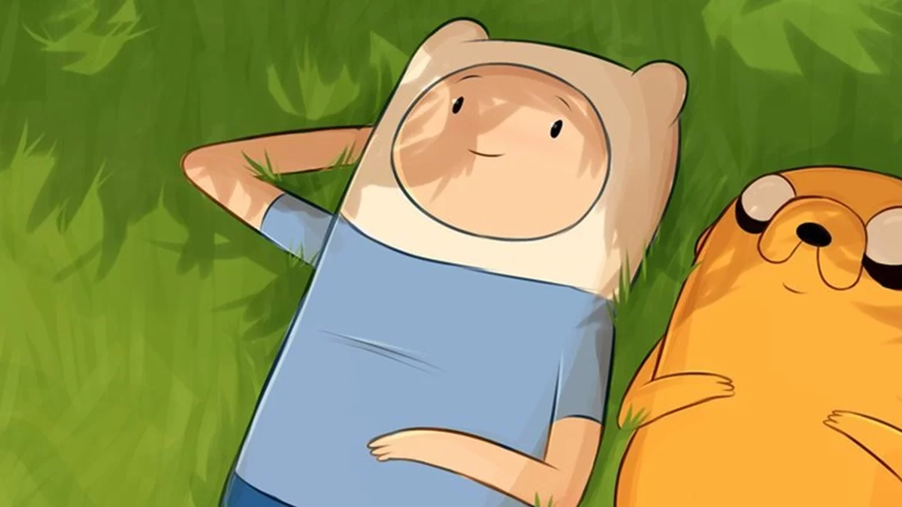
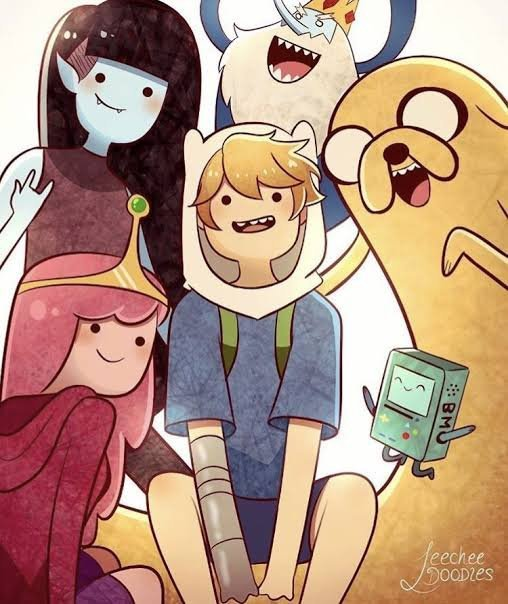

Imagens do show
Finn e Jake em uma das suas aventuras.
Uma cena épica de Finn e Jake.
Marceline, a vampira, com sua guitarra.

Finn e Jake com Marceline, Princesa Jujuba e Bmo.

Finn e Jake descansando.

Finn e seus amigos.
Finn se preparando para uma nova aventura.
Uma cena da Terra de Ooo, o cenário das aventuras.
Finn e Jake enfrentando um vilão poderoso.

Marceline, a vampira, cantando suas músicas de rock.
Informações sobre a série
1. Gênero da série: "Hora de Aventura" é uma série de animação de comédia e fantasia.
2. Criadores: A série foi criada por Pendleton Ward, ex-animador da Cartoon Network.
3. Estreia: A série estreou em 2010 no canal Cartoon Network.
4. O Mundo de Ooo: A Terra de Ooo é um lugar pós-apocalíptico, onde os personagens vivem e se aventuram.
5. Tema central: A série explora a amizade, aventura, e o crescimento pessoal de Finn e Jake.
6. A série tem uma forte influência do surrealismo: A série combina elementos de fantasia com um humor peculiar e surreal, criando um universo único.
7. A evolução de Finn: Ao longo da série, Finn cresce de um adolescente impulsivo para um herói mais reflexivo e maduro.
8. A música: Marceline, uma das personagens principais, é uma famosa cantora de rock, e suas canções são um dos destaques da série.
9. Relação de Finn e Jake: A amizade entre Finn e Jake é central para a série, sendo um reflexo da importância da camaradagem.
10. Influência cultural: "Hora de Aventura" teve um grande impacto cultural, sendo aclamada por sua criatividade, personagens profundos e abordagens inesperadas de temas como a vida e a morte.